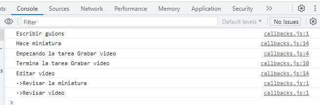
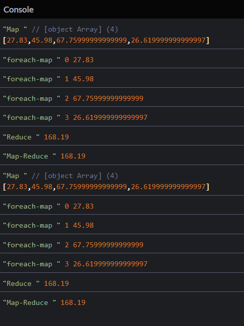
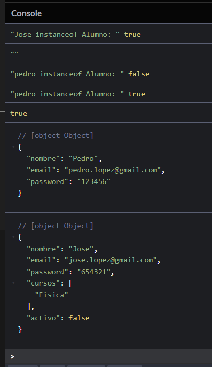
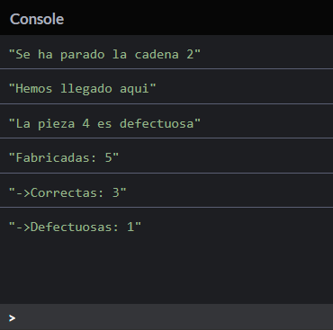

Practicas de los cursos JS
Practicas desarrolladas en los cursos de JS.
Callbacks:
Esta práctica ayuda a entender el funcionamiento de los callbacks, en este caso distribuye ciertas tareas que están controladas por medio de "setTimeouts" de esta forma se puede entender la manera de uso en operaciones asíncronas y el flujo que toma el usar callbacks.
Para ver la practica ingresa a CodePen.
Foreach, Reduce y Map:
El objetivo de esta práctica era entender el funcionamiento de "Foreach", "Reduce" y "Map" en conjunto, para eso usamos un arreglo de objetos, que primeramente pasa por la función de Map que realiza la operación de multiplicar el precio y cantidad de cada objeto dentro del arreglo, esto devuelve otro arreglo de los resultados; después, con Foreach hacemos la impresión de este resultado y, por último, con Reduce se hace la suma de todos los elementos del array, dando como resultado una sola cantidad.
Para ver la practica ingresa a CodePen.
Programación orientada a objetos (POO):
El tema de POO es lo mismo de siempre, en esta práctica repasé la creación de clases con sus supuestos métodos y constructores, después de eso creé otra clase (Alumno) que hereda todos los atributos de la clase principal y con la función o método "super()" puedo hacer uso de las mismas variables de la clase padre (Usuario), al final solo creé la instanciación del objeto y le hice un "console.log()".
Para ver la practica ingresa a CodePen.
Try Catch:
En el tema de Try-Catch realicé la práctica de crear un número aleatorio en donde si resulta debajo del 0.25 se crea una pieza defectuosa y si es arriba de 0.25 se toma como una pieza fabricada correctamente, el Try funciona como recepción del intento para determinar si es defectuosa o no, si resulta serlo el Catch captura el error, todo esto está dentro de un ciclo, por lo que dependiendo de las piezas que se ingresen y el concepto de aleatoriedad varía el resultado de las defectuosas. En el ciclo hay dos variables que suman las piezas defectuosas y las fabricadas correctamente, al final imprime por consola el resultado de la suma acumulada.
Para ver la practica ingresa a CodePen.